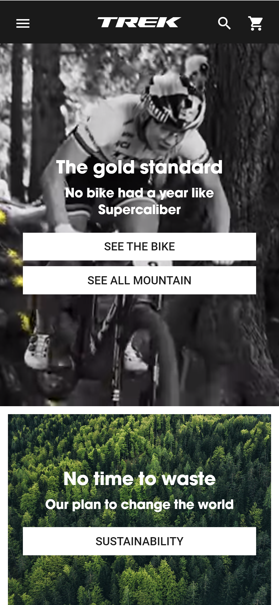
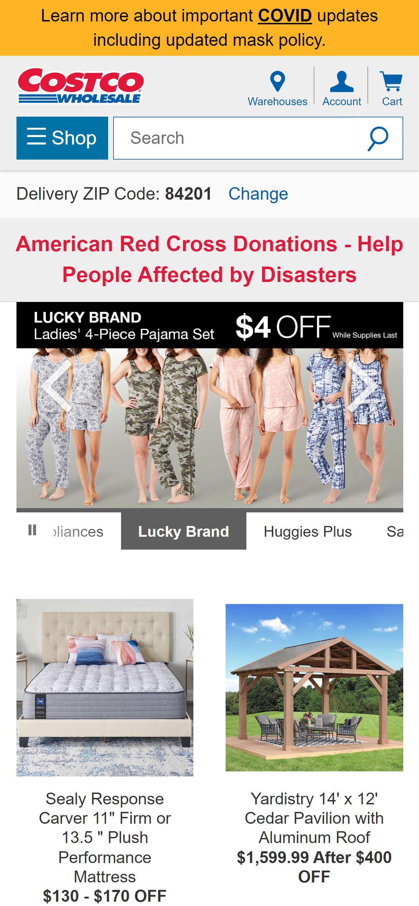
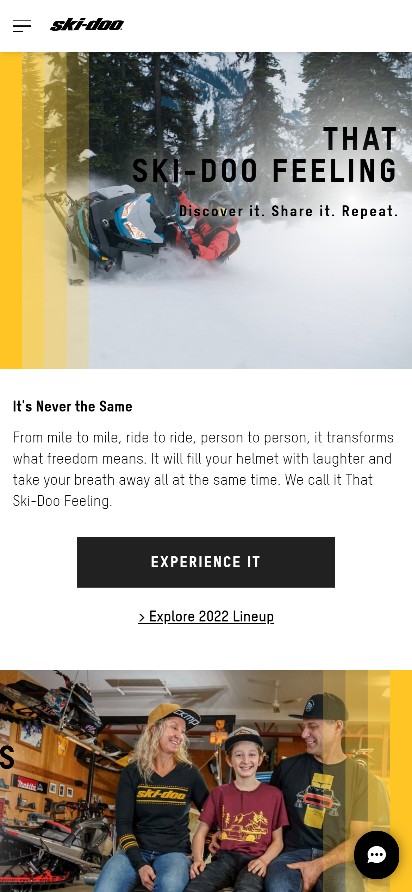

White Space
Trek Bikes
trekbikes.com I think that Trek did a good job using whitespace on their site because each section of text is away from the edges of the screen and isolated from other elements. They also did a good job using the different headers to drive you to focus your eyes where they wanted you to.
Alignment
Costco
costco.com/ Costco’s alignment on there site is spot on. All of the items that they have listed are laid out in a perfect grid with images on top and details below. Everything is laid out in a way that is very intuitive to use. I also like how the scrolling image for the coupons is taking up exactly two parts of the grid so even though it is double in size it is still aligned.
Repetition
Skidoo
Skidoo.com Skidoo did a great job with the repetition on their site. I especially liked how they used their branding colors on the outer edges alternating sides. I think it both looks cool and really helps break up the different sections of the site as you are scrolling.